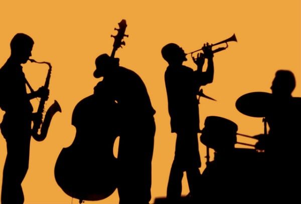

• The first one shows the most popular track of each year since 1992, and includes track samples.
• The second visualization compares different interesting features of the tracks between two distinct years.
• The last one analyzes the popularity of main genres of music through time.
Feel free to navigate on the timeline and listen to the samples.
• Scroll on the graph to zoom in or out. The more you zoom in, the more years will be visible.
• Navigate through the timeline with the horizontal scroll bar, or by dragging the cursor directly on the graph.
Obviously, people on Spotify today tend to listen to recent tracks, hence old songs appear as less popular than new ones.
According to you, what's the period of time that had the coolest popular tracks? To us it's obviously the 90's!
In this next visualisation, you can find out exactly this!
Hover over the attribute names to get a short description of what they measure, and change the years dynamically using the 2 sliders below.
If needed, you can find more information on the features here.
It seems like music only got explicit very recently. Is that surprising to you?
Also, do you see how similar 1987 and 2008 look, even though there are 20 years apart?
Perhaps by using all the features we could gather a better picture, but the graph would be more crowded.
Note that the feature values (here in %) are calculated as the mean over the top tracks in each year.
The following visualization gives answers to such questions by clearly depicting the evolution of musical tastes over the last century.
For instance, if we take a close look at what happens from 1955 to 1980, we can see that Jazz, R&B and Soul gradually give way to Rock and Pop. We can also situate the emergence of Hip Hop in the 90's.
• Choose whether you want the graph to be ordered or not by ticking the box.
• Choose which year's genres you want to look at using the slider. This will display a nice musical-wave-like transition.